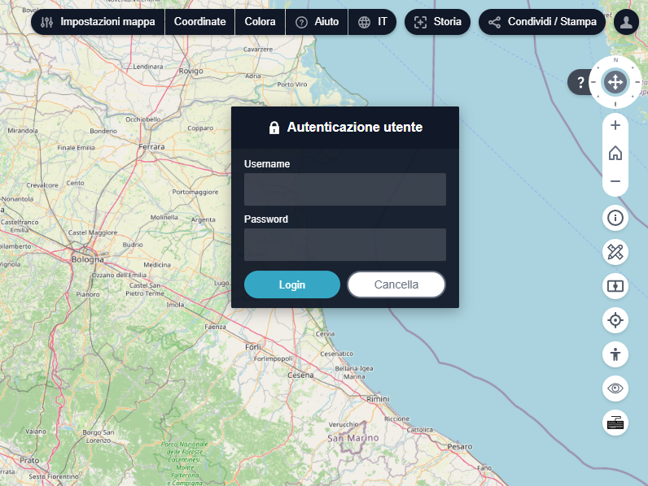
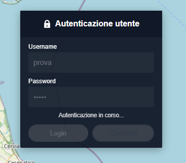
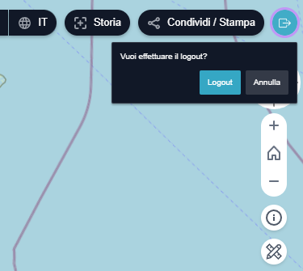

Login
La funzionalità di Login (o Accesso) consente di autenticarsi all'interno del Geoportale.

Quando l'utente entra nel Geoportale, il pulsante (oppure  ) nel menu mostra lo stato di sessione attivo e consente di accedere (o disconnettersi).
) nel menu mostra lo stato di sessione attivo e consente di accedere (o disconnettersi).
Come effettuare l'accesso
- Cliccare sull'icona utente nella barra superiore a destra.
- Inserire Username e Password nel pannello di autenticazione.
- Confermare con il pulsante Login oppure premere il tasto Invio.
Durante la verifica delle credenziali:
- i campi e i pulsanti vengono disabilitati;
- viene mostrato il messaggio "Autenticazione in corso...";
- il cursore passa temporaneamente in stato di caricamento.

Il pulsante Cancella chiude il pannello senza effettuare l'accesso.
Messaggi mostrati in caso di errore
Se la procedura non va a buon fine, viene mostrato un messaggio nel pannello. I possibili casi sono:
- Campi mancanti: "Inserisci sia il nome utente che la password."
- Credenziali non valide: "Nome utente o password non validi. Controlla le credenziali e riprova."
- Problema di connessione o proxy: "Impossibile raggiungere il servizio di autenticazione. Verifica la connessione internet e riprova."
- Errore generico: "Si è verificato un errore imprevisto durante il login. Riprova piu tardi."
Quando si modifica nuovamente username o password, il messaggio precedente viene rimosso automaticamente.
Logout e conferma

Se l'utente è già autenticato, un click sul pulsante di login apre un piccolo pannello di conferma con il messaggio "Vuoi effettuare il logout?".
Nel pannello sono disponibili due azioni:
- Logout: effettua la disconnessione.
- Annulla: chiude il pannello senza uscire.
Il pannello di conferma logout si chiude anche cliccando fuori dal pannello oppure premendo Esc.